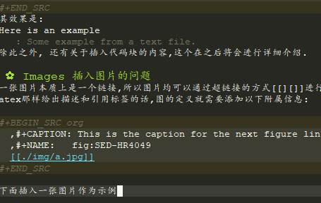

org基本使用指南
Table of Contents
- 1. DONE introduction: a welcome of org mode
- 2. DONE document structure 文档结构
- 3. DONE table 表格的使用
- 4. DONE hyperlinks 超链接
- 5. DONE todo iteems 待办项目
- 6. DONE Tags 标签
- 7. DONE Properties
- 8. DONE dates and times
- 9. INPROGRESS capture, refile, archive
- 10. INPROGRESS agenda views
- 11. DONE markup for rich contents
- 12. DONE exporting
- 13. DONE publishing
- 14. INPROGRESS working with source code 在笔记里插入源码
[%] - 15. TODO miscellaneous
这篇笔记是我用org写的，在学习org的过程中进行的一个简单的记录。 这篇笔记里所有的内容都来自于orgmode compact guide.
1 DONE introduction: a welcome of org mode
1.1 激活
当你初次使用一个emacs,且你并没有什么配置的时候,如何从零开始配置org呢?首先,尝试将以下代码复制到init.el文件里,当然,也可以是合理的其他位置.这样做的目的是为了激活快捷键. ``` (global-set-key (kbd "C-c l") 'org-store-link) (global-set-key (kbd "C-c a") 'org-agenda) (global-set-key (kbd "C-c c") 'org-capture) ```
2 DONE document structure 文档结构
文档结构被认为是文档的骨架,也就是一个"书"状的层次结构.
2.1 headlines
就是一级标题,二级标题等等.一般可以通过以下方式进行表达:
* 一级标题 ** 二级标题 *** 三级标题
此外,可以通过"M-<ENTER>"键一键形成一个同等的一级标题.可以使用TAB将这个一级标题转换为一个二级标题. 一般,当打开一个org文档时,这个org文档仅仅会展露出一个骨架.此时可以通过TAB将这个骨架进行展开.
2.2 在可见度上的遮盖与打开 visibility cycling
也就是在可见度之间的一种循环.前面有所介绍.
- 最常用的方法是使用TAB.如:
,-> folded FOLDED -> children CHILDREN -> subtree SUBTREE –. '------------------------------------------------------–—'
- 使用S-TAB在以下场景下实现循环.
,-> OVERVIEW -> CONTENTS -> SHOW ALL –. '---------------------------------–—'
- 使用C-u C-u C-u TAB ,实现show all 的功能.
- 自定义一个org文档起始时刻应该具有的结构.
一般而言,可以在org文档的开头这么写:
#+STARTUP:content
还可以设置变量比如:overview,content,showall等.
2.3 在headline之间的跳动
有的时候,是想直接在headline之间进行跳动的.这些过程通常可以经由以下快捷键进行展示. 值得注意的是,这些快捷键显然是C-c加上了一些独特的后缀. C-c C-n Next heading.从当前文本跳跃到上一个headline处,或从当前的headline跳跃到上一个headline处,而不论上一个headline是否与此处的headline同级别.你可以通过这个按钮跳跃到与光标相比最近的上一个headline处. C-c C-p Previous heading.类上 C-c C-f Next heading same level 只会在同一level的headline之间跳转,并且归于他们的上级那里,出不去. C-c C-b provious heading same level类上 C-c C-u backward to higher level headings.?
2.4 结构编辑 structure editing
结构编辑主要存在以下快捷键.
- M-RET 添加一个同级别的headline
- M-S-RET 添加一个同级别的todo headline
- M-LEFT M-RIGHT 将当前headline升级或者降级
- M-UP M-DOWN 将当前headline同其包括的所有内容上移或者下移
- C-c C-W 将本healine的所有内容归属到另一个一级标题之下
- C-x n s C-x n w 在buffer层面进行移动
2.5 sparse trees
sparse tree 是一种有侧重地进行"目标选择"的工具.(不太确定,我目前这样理解这一功能) 针对这种工具,基本的使用方法有:
- C-c / 这可以打开一个sparse tree 按钮
- C-c / r 关键字搜素.比如,在本文中,搜素和展示有关headline的内容.
2.6 plain list 简单的列表
简单的列表可以通过以下标记符号进行快速地创建. 使用"-" "+" "*" 进行无序号列表的创建,使用"1." "1 "进行有序号列表的创建.使用"::"进行解释. 下面是一个例子.值得注意的是,这里"::"充当的作用,与latex中\label极为相似.二者都是在给出一个方便于引用的对象.关于如何应用之,可以看4.2.
* Lord of the Rings My favorite scenes are (in this order) 1. The attack of the Rohirrim 2. Eowyn's fight with the witch king + this was already my favorite scene in the book + I really like Miranda Otto. Important actors in this film are: - Elijah Wood :: He plays Frodo - Sean Astin :: He plays Sam, Frodo's friend.
3 DONE table 表格的使用
表格的使用主要通过"|"符号实现 一般一个表格是需要通过这样子完成的
| Name | Phone | Age |
|---|---|---|
| Peter | 1234 | 17 |
| Anna | 4321 | 25 |
| Name | Phone | Age | |-------+-------+-----| | Peter | 1234 | 17 | | Anna | 4321 | 25 | | | | | | | | |
但是,显然,可以看出,这样的表格无法进行高效的输入,因为中间那行长长的横线很烦人.解决方案通常是:当你输入了"|-"之后,直接使用TAB进行自动补充.除此之外,你也可以通过TAB形成一个新的填空.
3.1 使用C-c | 形成一个新的表格
如题所述,虽然不怎么常用.
3.2 cell基本变换
- C-c C-c 在不移动点的前提下重新对齐表格
- TAB 横向,移动到下一个
- S-TAB 横向,前一个
- RET 下一行
- S-方向键 让当前的cell和周围的某个cell进行交换
3.3 DONE 行与列的变化
行与列的变换都是基于"M"进行的.
- M-LEFT M-RIGHT 将当前的列左移或者右移
- M-UP M-DOWN 将当前行上移或者下移
- M-S-LEFT 删除当前列
- M-S-RIGHT 插入新列
- M-S-UP 删除当前行
- M-S-DOWN 插入新行
- C-c -, C-c RET 分别表示插入一条horizontal line,在下面,或者上面
- C-c ^ 列排序
4 DONE hyperlinks 超链接
超链接,不用多数,一般遵循[ [link] [description] ] .对其进行编辑,可以通过C-c C-l进行.
4.1 内部链接
内部链接这里作者并没有给出详细的阐述.笔者尝试了以下,对于特殊的一些格式似乎都是可以识别的.
4.2 外部链接
首先,罗列一些典型的外部链接:
http://www.astro.uva.nl/=dominik’ on the web file:/home/dominik/images/jupiter.jpg’ file, absolute path /home/dominik/images/jupiter.jpg’ same as above file:papers/last.pdf’ file, relative path ./papers/last.pdf’ same as above file:projects.org’ another Org file docview:papers/last.pdf::NNN’ open in DocView mode at page NNN id:B7423F4D-2E8A-471B-8810-C40F074717E9’ link to heading by ID news:comp.emacs’ Usenet link mailto:adent@galaxy.net’ mail link mhe:folder#id’ MH-E message link rmail:folder#id’ Rmail message link gnus:group#id’ Gnus article link bbdb:R.*Stallman’ BBDB link (with regexp) irc:/irc.com/#emacs/bob’ IRC link info:org#Hyperlinks ’ Info node link 除此之外,还有一些特殊情况,这些特殊情况包括: file:~/code/main.c::255’ Find line 255 file:~/xx.org::My Target’ Find ‘<<My Target>>’ file:~/xx.org::#my-custom-id’ Find entry with a custom ID
{kind=link}
4.3 handling links, 处理链接
- C-c C-l 插入一个链接.当该处存在链接时,其意义是修改一个链接.
- C-c C-o 打开一个链接.
5 DONE todo iteems 待办项目
5.1 有关todo的基本操作
当一个items的前面包含todo的时候,它就变成了一个todo 的item. 一般而言,todo的基本命令如下:
- C-c C-t 打开todo选项.
- S-左右 cycling todo的状态吧.
- C-c / t 在sparse tree里看todo.有关于sparse tree的信息参见sparse tree.
- M-x org-agenda t 展现出全局的todo
- S-M-RET 输入一个新的todo.
5.2 DONE muti-state workflow 多态工作流
muti-state指的就是"并非所有的待办都是todo->done"循环的产物.比如debug的过程,可能是下面的形式.
(setq org-todo-keywords '((sequence "TODO(t)" "|" "DONE(d)") (sequence "REPORT(r)" "BUG(b)" "KNOWNCAUSE(k)" "|" "FIXED(f)")))
这时,简简单单使用todo这一套就不太管用了.我觉得这里的东西没什么太多的实际用途.
5.3 Progress Logging 进展记录
进展记录,最简单的使用方法是通过引入一个前缀"C-u",来加入一个时间戳.也就是通过"C-u C-c C-t"来改变todo项目的状态. emacs里面有专门的时间记录,详细可参阅此处.
5.3.1 TODO 阅读clocking working time
5.3.2 closing items 关闭项目
通过引入 (setq org-log-done 'time) 使得每次有一个item被标记为done之后,都会插入一个时间戳. 同样地,也可以通过引入 (setq org-log-done 'note) 在结束项目的地方插入一行注释.
5.3.3 tracking todo state changes
没兴趣做.略.
5.4 Priorities 优先级
就是对todo设置优先级的问题.一般优先级会用ABC进行表达.
- "C-c ,",设置优先级,可以输入ABC.通过空格键进行移除.
- S-上下 改变优先级.
5.5 break tasks down into subtasks 将任务分解为子任务
在父标题下使用[/]或者[%],之后,在子标题里设置todo的状态,就可以了.
5.6 checkboxes 复选框
在使用plain list的时候,可能会用到这个功能来进行进度管理. 比如下面的例子:
* TODO Organize party [1/2] - [ ] call people [0/2] - [ ] Peter - [ ] Sarah - [X] order food 使用C-c C-c来进行checkboxes状态的切换.
6 DONE Tags 标签
标签是用来进行交叉引用的一类东西,标签类似于完成latex里label的功能.标签一般被放在headline的后面,前与后都用":"作为连接.下面是一个简单的例子.
* Meeting with the French group :work: ** Summary by Frank :boss:notes: *** TODO Prepare slides for him :action:
6.1 tag inheritance 标签层级
以上面的例子为示,标签的层级具有一定的关联性.比如最后的headline,它包含着所有的标签,也就是,他继承了他的父标题以及祖父标题的标签.
当然,也可以在文章中定义标签,这种定义方法为:
#+FILETAGS: :Peter:Boss:Secret:
6.2 设置标签 test
- M-TAB 无法使用,与系统的页面转换重合
- C-c C-q 为当前的headline插入一个tag
- C-c C-c 当光标在headline时,同2
除了前面那种一个个插入标签的方法之外,org支持插入一个标签列表,其基本语法为:
#+TAGS: @work @home @tennisclub #+TAGS: laptop car pc sailboat
除此之外,emacs支持快速标签选择,也就是一个按键输入一个标签,这需要在配置文件中写入:
(setq org-tag-alist '(("@work" . ?w) ("@home" . ?h) ("@laptop" . ?l)))
6.3 标签组
标签组是很多个标签组成的集合.他的用途是:当进行标签的搜索时,如果输入了标签组的名字,那么就可以返回匹配标签组内所有标签headlines 标签组的定义方法如下.
#+TAGS: [GTD : Control Persp] #+TAGS: {Context : @home @work}
6.4 标签的搜索
- C-c / m or C-c \ 生成一个sparse tree,
- M-x org-agenda m 通过agenda file 生成一个全局的标签匹配列表
- M-x org-agenda M 在2的基础上,仅仅显示带有TODO标签的那些.
值得注意的是,这些标签均支持布尔运算.比如使用"a+b-c"代表包含a标签并包含b标签且不包含c标签的所有匹配项.使用"x|y"代表包含x标签或包含y标签的匹配项.
7 DONE Properties
properties类似于一种“面向对象”的使用方式，也就是定义了一个实体，下面有诸多变量，并依据这些变量具有某些特定的数值来描述其属性。 鉴于很无聊，就将其略去。
8 DONE dates and times
8.1 timestamps 时间戳
此处存在各种各样格式的时间戳，然而，对我而言，这并非需要关心或者讨论的重点，因而对其仅进行简要介绍.
8.1.1 C-c . 插入时间戳
这个命令用来插入一个时间戳,(如果有时间戳了,那么就是修改这个时间戳).连续使用两次这个指令可以形成一个时间戳的范围,在这个范围之内可以完成一些或许更加一般的事.
8.1.2 C-c ! 插入非活动类型时间戳
这个命令插入的时间戳不会被调用在agenda里面.
8.1.3 S-方向键
控制上下左右,似乎有一些独特的细节,不过我不关心.
8.2 deadline and scheduling 截止日期与时间表
8.2.1 C-c C-d
这样就直接输入了一个deadline.
8.2.2 C-c C-s
schedule是一种描述一种东西什么时间开始的日期. [测试了,无法使用.]
8.3 clocking work time 记录在特定项目上消耗的时间
如题所示,这一章来看一看如何记录消耗在特定项目上的时间.
- C-c C-x C-i 打开一个clock（clock in）
- C-c C-x C-o 关闭一个clock（clock out）
- C-c C-x C-e 升级当前时钟的估计工作量
- C-c C-x C-q 退出当前时钟，如果不小心打开了一个时钟，可以用这个选项
- C-c C-x C-j jump，跳转到任务中当前计时的标题
9 INPROGRESS capture, refile, archive
9.1 capture
capture（名词，捕捉）: capture是指在知识系统中快速捕捉新的主意与任务（task）的一种方式。并且，这种捕捉还可以关联与其相关的一些材料。这一整套的流程被称作capture。
9.1.1 setting up capture 设置capture
可以通过下面命令设置默认的笔记路径。
(setq org-default-notes-file (concat org-directory "/notes.org"))
也可以通过下面的方式设置一个全局快捷键（这个快捷键的设置早在【引用】里就已经给出）
(global-set-key (kbd "C-c c") 'org-capture)
9.1.2 using capture 使用capture
- M-x org-capture
执行org-capture.
- C-c C-c
返回捕获过程之前的窗口配置
- C-c C-w
定档(finalize)整个capture的过程,即将笔记移动到一个新的位置.
- C-c C-k
9.1.3 DONE capture templates
中途推出按钮. 这个地方并不是特别清楚.应该是定义模板的一种格式.设置模板的源代码为:
(setq org-capture-templates '(("t" "Todo" entry (file+headline "~/org/gtd.org" "Tasks") "* TODO %?\n %i\n %a") ("j" "Journal" entry (file+datetree "~/org/journal.org") "* %?\n Enetered on %U\n %i\n %a")))
其表达的意义是:
- 当使用t时便可以创建一个todo,并导出一个链接,链接的形式为:文件名+章节名,而后作为一个Tasks存储在~/org/gtd.org这个文档里.
- %?表示在把模板内容填充完毕之后,光标应该停留的位置;
- %i (initial content) 表示被填充的初始内容,只有在有文本内容被选中,且使用了C-u前缀进行capture的前提下这个功能才能使用.
- %a annotation,注释.通常是用org-store-link创建的链接
9.2 refile and copy 文件重归档与复制
本节的意思,似乎就是简化剪切,切换,粘贴这一整套的文本条目重新归档的过程.
- C-c C-w
C-c C-w 就是说,要把这一小节(光标所在的小节)的内容归档至其他的某个小节.
- C-u C-c C-w
使用refile界面跳转到标题.
- C-u C-u C-c C-w
- C-c M-w
10 INPROGRESS agenda views
Agenda是一种对零散的todo文件进行聚集处理的操作。
10.1 agenda files
- C-c [ 将当前文件加入到agenda file列表中
- C-c ] 将当前文件从agenda file列表中移除
- C-'
- C-, cycle through agenda file list， one after another
10.2 The Agenda Dispatcher 日程调度分配器
使用M-x org-agenda进行激活,或者使用快捷键C-c a. 分配器提供了以下一些默认的指令:
- a 创建一个日历形式的日程
- t T 创建一个包含所有tudo项的列表
- m M 创建一个匹配了表达式的所有headline的列表
- s Create a list of entries selected by a boolean expression of keywords and/or regular expressions that must or must not occur in the entry. 不是特别理解这句话什么意思.
10.3 The Weekly /Daily Agenda
就像是传统的纸上的日程表一样,weekly-daily agenda给出每天或每周所需要干的事. 比如,在使用M-x org-agenda a命令时,其基本的思路是从org文件列表中提取条目信息编译形成当前周的日历.
10.4 the global todo list 全局todo列表
全局todo列表将所有的未完成的todo项目进行了一个统一的收集,可以用t关键字进行查询.
- M-x org-agenda t 展示全局todo列表
- M-x org-agenda T 和一条相似,不过可以允许搜索特定的todo关键词
10.5 Matching Tags and Properties 匹配标签和属性
11 DONE markup for rich contents
也就是关于org进行文本信息标注的一些常见而具体的手段.
11.1 paragraphs 段落
同makrdown一样,paragraph也是通过一个空的行进行段与段之间的分割.除此之外,也可以使用latex中常见的"\\". 但是,这样的一个问题是,对于一些特殊的格式,比如诗歌中的空格,要怎么进行表现呢? 一般会通过如下方式:
#+BEGIN_VERSE Great clouds overhead Tiny black birds rise and fall Snow covers Emacs ---AlexSchroeder #+END_VERSE
初次之外,就是对"语录"的格式要求.markdown里使用">"进行,而在org里,其基本文法是:
#+BEGIN_QUOTE Everything should be made as simple as possible, but not any simpler ---Albert Einstein #+END_QUOTE
关于居中,常见的使用方法是:
#+BEGIN_CENTER Everything should be made as simple as possible, \\ but not any simpler #+END_CENTER
综上,仅仅需要记住verse,quote,center三种形式,就可以解决问题.
11.2 Emphasis and Monospace 强调与等宽字体
You can make words ‘*bold*’, ‘/italic/’, ‘underlined_’, ‘=verbatim=’ and ‘~code~’, and, if you must, ‘+strike-through+’. Text in the code and verbatim string is not processed for Org specific syntax; it is exported verbatim.
You can make words ‘*bold*’, ‘/italic/’, ‘_underlined_’, ‘=verbatim=’ and ‘~code~’, and, if you must, ‘+strike-through+’. Text in the code and verbatim string is not processed for Org specific syntax; it is exported verbatim.
11.3 embedded latex
org对latex的嵌入十分灵活,除了下文中给出的世界嵌入latex风格的任何语言之外,此处还有最基本的对latex风格公式的支持. 比如下面这段话,完全可以在org中直接使用:
The radius of the sun is R_sun = 6.96 x 10^8 m. On the other hand,
the radius of Alpha Centauri is R_{Alpha Centauri} = 1.28 x R_{sun}.
\begin{equation} % arbitrary environments,
x=\sqrt{b} % even tables, figures
\end{equation} % etc
If $a^2=b$ and \( b=2 \), then the solution must be
either $$ a=+\sqrt{2} $$ or \[ a=-\sqrt{2} \].
其效果为: The radius of the sun is Rsun = 6.96 x 108 m. On the other hand, the radius of Alpha Centauri is RAlpha Centauri = 1.28 x Rsun.
\begin{equation} % arbitrary environments, x=\sqrt{b} % even tables, figures \end{equation} % etc
If \(a^2=b\) and \( b=2 \), then the solution must be either \[ a=+\sqrt{2} \] or \[ a=-\sqrt{2} \].
11.4 literal examples 一些例子
这里主要想介绍一些文学编程中如何进行举例的问题. 一般来说,定义一个例子的方法是:
#+BEGIN_EXAMPLE Some example from a text file. #+END_EXAMPLE
当然,这种方法也可以被简化为空格+冒号.也就是
Here is an example
: Some example from a text file.
其效果是: Here is an example
Some example from a text file.
除此之外, 还有关于插入代码块的内容,这个在之后将会进行详细介绍.
11.5 Images 插入图片的问题
一张图片本质上是一个链接,所以图片均可以通过超链接的方式[[][]]进行表达,特殊地,如果想像latex那样给出描述和引用标签的话,图的定义就需要添加以下附属信息:
#+CAPTION: This is the caption for the next figure link (or table) #+NAME: fig:SED-HR4049 ./img/a.jpg
{kind=link}
下面插入一张图片作为示例

Figure 2: 测试图片效果
11.6 creating footnotes 插入脚注
插入脚注的方法很简单1去使用,下面是一个示例:
The Org homepage[fn:1] now looks a lot better than it used to. ... [fn:1] The link is: https://orgmode.org
关于脚注的东西,org内置了以下快捷键:
- C-c C-x f 插入一条新的脚注,如果存在,那么就进行跳转(从正文跳转到参考处,或者从参考处跳转到正文的脚注位置)
- C-c C-c 从脚注的定义处与参考处之间进行跳转
12 DONE exporting
这一章主要讨论如何使用org进行文档的导出.一般,关于文档导出的工作,可以通过C-c C-e进行调用.
12.1 导出时需要的一些特殊信息
比如,可以在文档的所有位置(但是建议于开头处)插入此类:
#+TITLE: org基本笔记
一般可供此类插入的信息主要包括:
- TITLE. 文章的名字
- AUTHOR. 作者
- DATE. 一个日期,或者org的时间戳(timestamp)
- EMAIL. email
- LANGUAGE. language code,如"en".
12.2 table of contents 内容目录
在org中,导出会默认在第一个headline前面插入目录.可以通过下面的一些特殊的命令对目录进行自定义.
#+OPTIONS: toc:2 (only include two levels in TOC) #+OPTIONS: toc:nil (no default TOC at all)
12.3 include files 导入其他文件
可以在org文件里插入其他文件,比如,插入一段emacs的配置文件信息,将之作为src并以elisp的语法进行展示.
#+INCLUDE: "~/.emacs" src emacs-lisp
一般,插入的文件的类型包括example, export, src这三种.
12.4 comment lines 注释行
注释符号为＃号.
12.5 正文开始:导出成不同格式的文件
12.5.1 ASCII UTF-8
导出为txt文件.使用C-c C-e t a(scii) 或C-c C-e t u(tf-8)
12.5.2 HTML
使用C-c C-e h h生成一个html文件,使用C-c C-e h o 生成并在浏览器里打开这样一个文件.
此处值得注意的是,org在进行文本转化时,将"<"与">"表达为"<"与">".因此,如果要在org中插入一段原生的HTML代码,应当使用"此处写html自带的标记语法",比如下面的例子:
@@html:<b>@@bold text@@html:</b>@@
对于大范围的HTML代码块,可以通过下面的方法进行代码块的导出
#+HTML: Literal HTML code for export #+BEGIN_EXPORT html All lines between these markers are exported literally #+END_EXPORT
12.5.3 latex export
有关latex文本的导出,是一个很重要的地方.其重要之处在于,latex的语法比org复杂更多,因此,在这种转变的过程中,难免存在大量的部分是默认的. 下面将一一介绍如何把一个org文件转化为一个可编译的latex.
- 设置document的class
org默认其为article类型,但是,当然,也可以自己定义所使用的latex的类,使用如下命令:
#+LATEX_CLASS: myclass当然,这样导入要求myclass必须在列表org-latex-classes里面.
- 基本的导出命令.
- C-c C-e l l 导出一个latex文件
- C-c C-e l p 导出一个latex文件并将之转换为PDF.
- C-c C-e l o 导出一个latex文件并将之转换为PDF,之后打开
当然,需要强调的一个问题是,*上述方法均无法很好地处理latex中存在中文的问题(因为编译本质上用的是pdflatex而非xelatex)*
- 在org中插入latex代码块
一般,org允许在文档中插入任意的latex代码块,其基本思路与HTML的插入类似,规则为:
- 行内插入.使用""进行插入.
单行插入.使用如下命令:
#+LATEX: any arbitrary LaTeX code多行插入.使用:
#+BEGIN_EXPORT latex any arbitrary LaTeX code #+END_EXPORT
12.5.4 iCalendar export
关于这个东西,大多数人看见了或许会觉得奇怪,因为这个东西并不是十分地让人觉得熟悉. 作者查阅了一下,这个东西是一种通用的电子日历类型.下面就对其进行简单介绍.
- C-c C-e c f. 从当前org缓冲区(为什么是缓冲区?)创建一个iCalendar条目并将其存储在相同文件夹下,使用后缀.ics
- C-c C-e c c.Create a combined iCalendar file from Org files in org-agenda-files and write it to org-icalendar-combined-agenda-file file name.
13 DONE publishing
publishing是一种手段,将笔记转换为html等格式之后上传到博客上. 当进行发布时,需要进行一些自定义的配置,如
(setq org-publish-project-alist '(("org" :base-directory "~/org/" ;; 基础的目录 :publishing-directory "~/public_html" ;; 发布文件的目录 :section-numbers nil :table-of-contents nil :style "<link rel=\"stylesheet\" href=\"../other/mystyle.css\" type=\"text/css\"/>")))
这个东西我还没有配置!
- C-c C-e P x 为一个特殊的项目提示,并发布其所有文件.
- C-c C-e P p 发布包括当前文件的项目.
- C-c C-e P f 只发布当前文件.
- C-c C-e P a 发布所有的项目
14 INPROGRESS working with source code 在笔记里插入源码[%]
org 在编辑源码,运行源码,tangling源码与导出源码上都有一些贡献. 一般来说,一个源码都可以表现成下面的格式:
<body>
其中
- ‘<name>’ is a string used to uniquely name the code block,
- ‘<language>’ specifies the language of the code block, e.g., ‘emacs-lisp’, ‘shell’, ‘R’, ‘python’, etc.,
- ‘<switches>’ can be used to control export of the code block,
- ‘<header arguments>’ can be used to control many aspects of code block behavior as demonstrated below,
- ‘<body>’ contains the actual source code.
通过C-c '进行代码块的编辑，但是常常的一串呢？都需要输入吗？不是这样的。 从此处找到了一个自定义的解决方案,我觉得或许可以. 首先,把下面的函数放入init文件中.
(defun org-insert-src-block (src-code-type) "Insert a `SRC-CODE-TYPE' type source code block in org-mode." (interactive (let ((src-code-types '("emacs-lisp" "python" "C" "sh" "java" "js" "clojure" "C++" "css" "calc" "asymptote" "dot" "gnuplot" "ledger" "lilypond" "mscgen" "octave" "oz" "plantuml" "R" "sass" "screen" "sql" "awk" "ditaa" "haskell" "latex" "lisp" "matlab" "ocaml" "org" "perl" "ruby" "scheme" "sqlite"))) (list (ido-completing-read "Source code type: " src-code-types)))) (progn (newline-and-indent) (insert (format "#+BEGIN_SRC %s\n" src-code-type)) (newline-and-indent) (insert "#+END_SRC\n") (previous-line 2) (org-edit-src-code)))
之后，将下列快捷键绑定
(add-hook 'org-mode-hook '(lambda () ;; turn on flyspell-mode by default (flyspell-mode 1) ;; C-TAB for expanding (local-set-key (kbd "C-<tab>") 'yas/expand-from-trigger-key) ;; keybinding for editing source code blocks (local-set-key (kbd "C-c s e") 'org-edit-src-code) ;; keybinding for inserting code blocks (local-set-key (kbd "C-c s i") 'org-insert-src-block) ))
之后，就可以通过C-c s i 快捷键插入一个代码块了。 此处参考http://wenshanren.org/?p=327的博客。
下面对几个特殊环节进行简要介绍. 这些内容均来自于这里.
14.1 TODO using header arguments
14.2 TODO evaluating code blocks
14.3 TODO results of evaluation
14.4 TODO exporting code blocks
14.5 TODO extracting source code
15 TODO miscellaneous
Footnotes:
这就是一个脚注